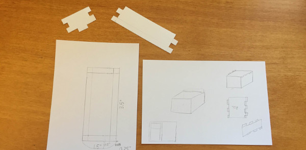
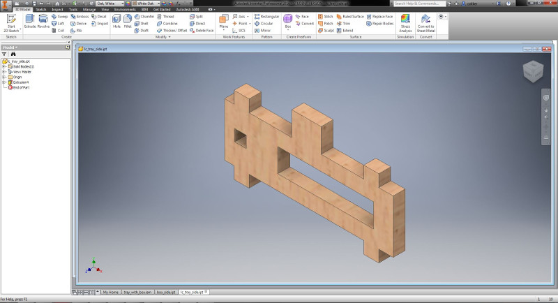
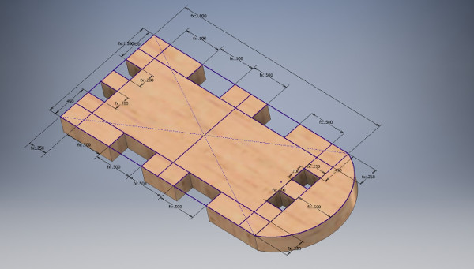
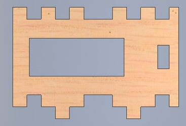
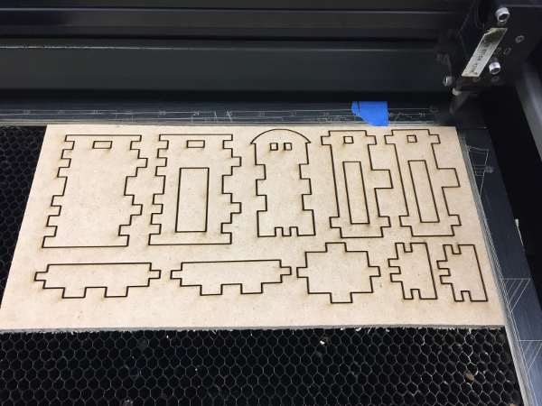
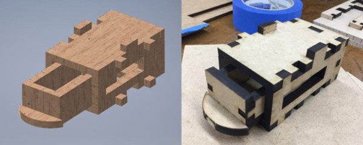

Custom Laser-Cut MDF Resistor Storage Boxes
Autodesk Inventor 2017 | DWG TrueView | CorelDRAW | Epilog Laser Cutter
Completed as part of 4.140 (MIT Graduate-Level Class), September 2016
Building Stacking Resistor Boxes
Any electronics lab surely has a place to store its resistors. Very often, these are bought from the store and their specific sizing is left up to several default values provided by the maker of the box. In this project, I set out to make a modular system of resistor boxes that could be press-fit together to create a box geometry that is suitable for the number of resistors that any individual electronics lab has.
Cardboard was not ideal in terms of durability for these components, so I opted to use Medium Density Fiberboard (MDF) instead. I originally wanted to use 1/8" thickness MDF, but since Home Depot didn't have that in stock, I had to use 1/4" thickness MDF instead. I cut the MDF using the laser cutter in the Science Center basement at 100% power and 1.4% speed which is fairly slow.
Paper to notecards to Inventor to MDF
Building the box began with choosing an overall geometry and press-fit mechanism. Since MDF is a very tough material, jigsaw-puzzle style press fits along the edges of pieces was possible. I began sketching out notched designs with dimensions on sheets of paper and I realized before long that it would be difficult to visualize these pieces in the 2D plane of the paper. I switched to a tougher type of paper, notecards, and began cutting out the pieces to determine a basic geometry.
After doing initial sketches on paper and building a model using notecard paper, I began building the model using Autodesk Inventor. I chose Inventor because the way it clearly separates components and assemblies makes the design of a large system like this more manageable. In addition, Inventor has built in parameterization tools so constant quantities like box width or MDF thickness can be declared once and referenced through all of the designs.
Box geometry
The design is fundamentally two boxes, one within the other. The inner box is simply for holding the resistors and has an open top. Additionally, it has a small lip that sticks out and can be used as a handle for pulling the compartment out. This design was comparatively simpler because it involved a base, two side walls, and two front/back walls.
The outer box is more difficult because in addition to press-fitting together with itself, it needs extra protrusions that allow it to be modular and interface with the other boxes in the stack, both vertically and horizontally.
Once a basic geometry for both boxes was determined, I began the process of exporting the raw inventor files (.ipt parts) for use in the laser cutter. The first part was to account for kerf by adjusting the dimensions of the parts within Inventor. Estimates have put the kerf for the laser cutter in the Science Center at around 0.005in - this was parameterized in a variable called "kerf" and either added to each dimension (for edge cuts) or subtracted from each dimension (holes within the design) to account for the material removed by the laser cutter.
Kerf was not difficult to account for, but Inventor's difficult file compatibility was. It turns out Autodesk Inventor does not allow 2D faces of its models to be directly exported as SVG vector files. At the time of file preparation, I did not know what other file types CorelDRAW (the laser cutter software) was able to accept. I found a workaround by saving the 2D face of the model as a .dxf file and then opening that file in OpenOffice Draw which is a free software. From OpenOffice Draw, I was then able to save the image as an SVG vector file.
The pieces for a single box were cut out of a 6"x12" piece of 1/4" thickness MDF. The stock MDF I purchased from Home Depot came in 24"x48" size, so it was necessary to use a vertical saw to bring the MDF down to size before laser cutting in the 18"x32" bed of the laser cutter (many thanks to Rob Hart for helping with the vertical saw). There were no issues with the cutting and 100% power + 1.4% speed seemed to make it through the 1/4" thickness MDF without too much difficulty.
From there, it was just a matter of popping out the pieces and assembling the inner and outer boxes. Accounting for kerf meant the press-fit pieces fit together very tightly - it was necessary to use a mallet to help bang the pieces into place. And the finished product looks beautiful.
